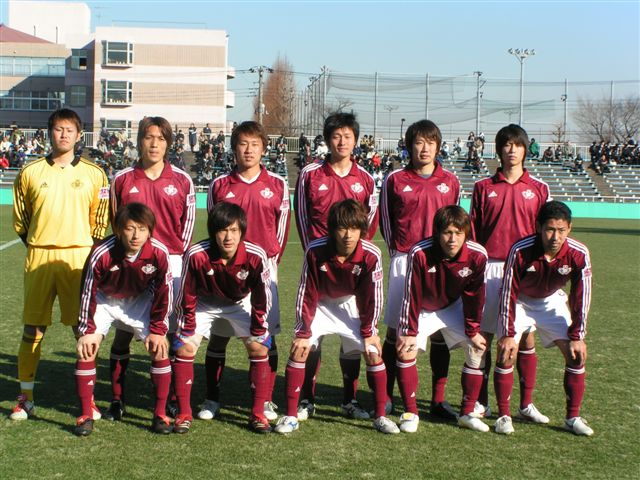

Main Contents
2007年01月10日
超高速兄弟2トップ誕生へ

全日本大学選手権準決勝での早稲田大学集合写真（前列右から2番目が松橋優）
1月10日、西が丘で行われた全日本大学サッカー選手権。2-0で流通経済大学に勝利し、10年ぶ
りとなる決勝進出を早稲田大学が決めましたが、試合後の会見に臨んだ大榎克己監督からは、更なるサプライズがもたらされました。
プロに進む4年生について問われ、既に発表済であるCB山口貴弘のJ2湘南入団、GK時久省吾のJ1甲府入団について述べた後、大榎監督が口にしたの
は、国見高校時代から2歳上となる兄・章太（J1大分）以上の快速を誇り、現在は早稲田不動のエースとして君臨するFW松橋優の進路について。
監督から明かされたチーム名はJ1の大分でした。すなわち、国見以来6年ぶりに、兄弟そろってのチームに所属することを意味する訳です。
高校時代は章太が3年生の時に優が1年生という立場だったため、公式戦ではなかなか日の目を見なかった兄弟2トップ。大分からの正式発表はまだですが、
プロの舞台で超高速ドリブルの競演が見られる日が今から楽しみです。
TrackBacks
トラックバックURL:
- »弟 from トリニータ狂想曲
-
超高速兄弟２トップ誕生へ（fromフットボール定食） 松橋弟ｷﾀ━━━(ﾟ∀ﾟ)━━━!!!!! Ｊ数クラブの間で争奪戦が繰り広げられていたという早稲...
- on 2007年01月10日 21:35
- [Read More]
Post a comment
もしTypeKeyの アカウントを持っていれば、 サ イン・イン してコメント可能です。
もしTypeKeyの アカウントを持っていれば、 サ イン・イン してコメント可能です。
(フットボール定食 では不適切なコメントを防止するため、コメントを掲載する前に管理者がコメントの内容を確認しています。コメントを初めて投稿する場合すぐに掲載されませ んが、管理者が適切なコメントと判断した場合コメントは直ちに表示されますので、再度コメントを投稿する必要はありません。)